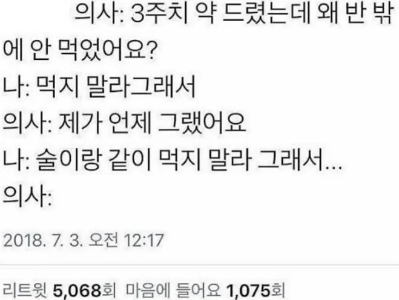
의사가 극대노한 이유.jpg
댓글
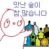
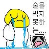
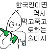
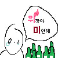
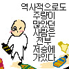
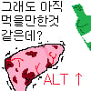
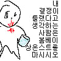
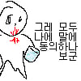
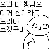
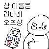
고대 한국인들은 술을 먹고 더마시기 위해 게워내고 또마셨대
위에 콘들이 죄다 술쟁이 콘이네 ㅋㅋㅋㅋㅋ
의학의 발전이 이럴땐 안좋은듯
저런 병신들까지 살려내니
제 간이 상당히 단단해졌습니다 이거
근데 궁금하네. 어떤 이유로든 일단 술 마셨으면 약은 무조건 100% 안먹는게 좋나? 아님 효과 병신돼도 먹는게 안먹는거보단 낫나? 약마다 다른가
알코올 분해하느라 효소가 소모된상태에서 약먹으면 유독한경우가 있으니까 타이레놀이라던가
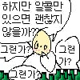
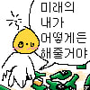